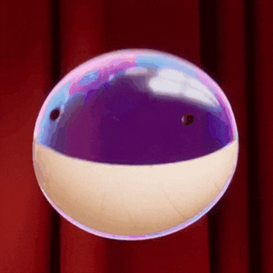

~ Introducción ~
Hola! Mi nombre es Ruben Valdez, actualmente soy estudiante de la carrera de Ingeniería de software; también estudié Economía y finanzas, y soy un gran amante del campismo y de la naturaleza.
Mis mayores áreas de interés en la carrera son la ciberseguridad, el análisis de malware, la ingeniería inversa y los modelos de inteliencia artificial. Pero realmente soy gran fan de la mayoría de áreas que tocan la ingeniería de software.
Mi primera computadora la tuve a los 5 años, y desde entonces he sido un gran entusiasta de su funcionamiento a fondo. Tengo una gran curiosidad y desde corta edad me interesé en estudiar el por qué del funcionamiento de las computadoras. Siendo que aprendí a programar a un nivel básico gracias a los videojuegos.

~ Tecnologías ~
Lenguajes
Frameworks
Herramientas
Infraestructura
~ Proyectos ~
Comandas de restaurante
Este proyecto formó parte de la materia de bases de datos avanzadas, en el cual la principal finalidad era aprender la estructura correcta para comunicar correctamente entre capas, desde la persistencia hasta la presentación. Diseñando en su totalidad desde la arquitectura de la base de datos hasta el esqueleto del proyecto de java.
Enlace a GithubProyecto final BBDD Avanzadas.
Para este proyecto, se simuló a un cliente dueño de una inmobiliaria que quería tener un mejor control de sus arriendos, buscando un sistema que le facilitara administar sus propiedades y generar una orden de arrendamiento para clientes nuevos de una forma más sencilla. En este caso usando un motor de base de datos nuevo y un sistema de almacenamiento NoSQL.
Enlace a GithubChat TCP/UDP
Para este proyecto, el enfoque era aprender como es el funcionamiento básico de un servidor, como se genera la conexión cliente - servidor mediante los protocolos de red TCP/UDP. Para ello se creó un servidor el cual funcionaría como chat que pueden utilizar los clientes para comunicarse entre sí, tanto de forma pública como privada.
Enlace a GithubEtch - a - Sketch
El principal enfoque de este proyecto era aplicar nociones básicas de HTML y CSS sumado a interacciones con scripts de JS, así como el DOM. Es un canva en el cual puedes dibujar y puedes modificar las dimensiones del canva en tiempo real.
Enlace a Github